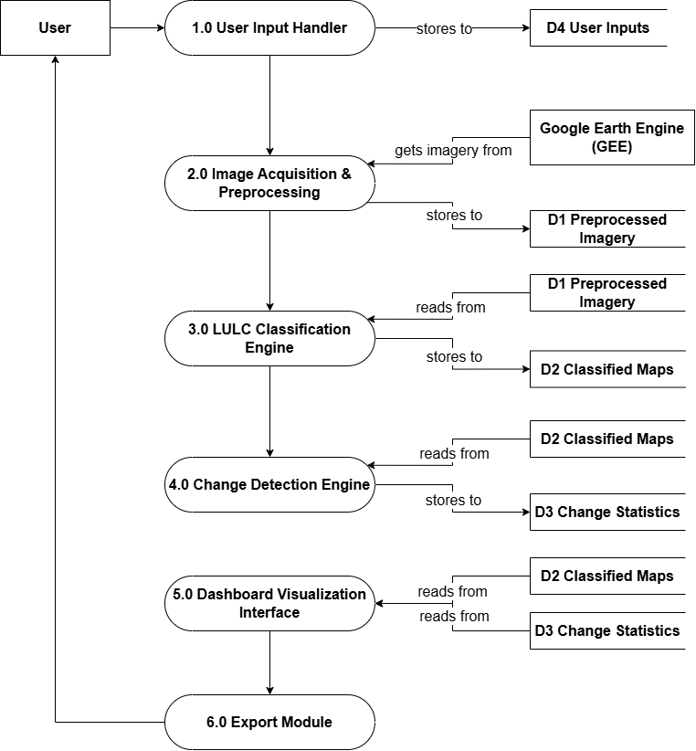
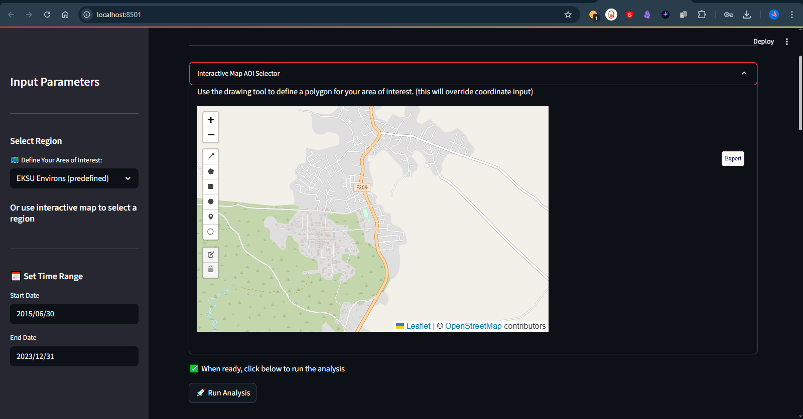

The interactive Streamlit interface displaying side-by-side unsupervised K-Means land cover clusters for the selected temporal periods.
(Use arrow keys or buttons to navigate • Click any image to view full size)
A cloud-powered geospatial application detecting land use dynamics using Sentinel-2 imagery, Google Earth Engine, and K-Means clustering.
Traditional land use monitoring relies on static desktop GIS software (like ArcGIS or QGIS) that is expensive, resource-intensive, and requires specialized training. This creates a barrier, keeping critical environmental intelligence out of the hands of local policymakers, educators, and the general public.
For my B.Sc. Computer Science final year project, I built a serverless, cloud-based web application. By integrating the Google Earth Engine (GEE) API for heavy spatial computation with a Streamlit front-end, I created an interactive tool that democratizes land use monitoring. Users can draw a polygon, select a date range, and instantly visualize land cover changes.
The interactive Streamlit interface displaying side-by-side unsupervised K-Means land cover clusters for the selected temporal periods.
(Use arrow keys or buttons to navigate • Click any image to view full size)
Data Layer (Google Earth Engine for Sentinel-2 retrieval & cloud masking) → Processing Layer (Python & Scikit-learn for K-Means Clustering) → Interface Layer (Streamlit & Folium for interactive web mapping).
GEE Data → Python Processing → Streamlit Interface
Here's a glimpse into the technical work that powers this project:

Level 1 Dataflow Diagram

Interactive Map AOI Selection Tool
Here's a sample of the Python code used to retrieve and process Sentinel-2 imagery via the Google Earth Engine API:
# Utilizing Google Earth Engine (GEE) via Python to retrieve and mask Sentinel-2 imagery
def get_sentinel2_composite(aoi, start_date, end_date):
collection = ee.ImageCollection('COPERNICUS/S2_SR_HARMONIZED') \
.filterBounds(aoi) \
.filterDate(start_date, end_date) \
.map(mask_s2_clouds) # Custom cloud masking function
# Return median composite clipped to the user's Area of Interest
return collection.median().clip(aoi)
This project was completed under the guidance of:
Project Supervisor
Here's what we achieved and learned:
Cluster 0 Decline
Cluster 2 Expansion
Sentinel-2 Spatial Resolution
K-Means Clusters